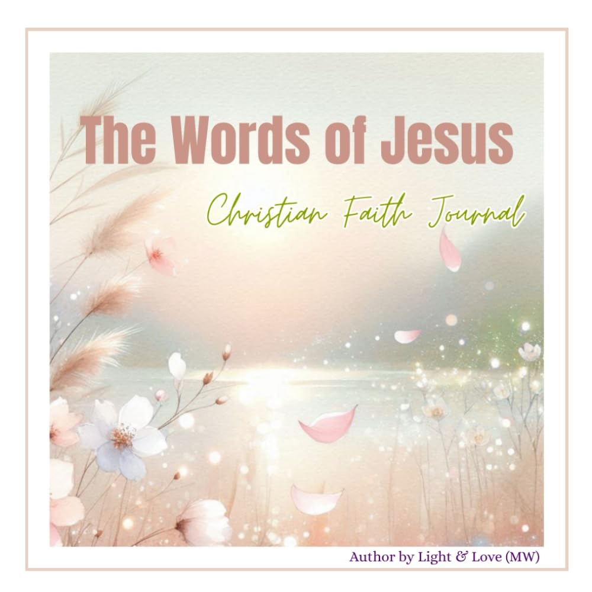

The Words of Jesus: Christian Faith Journal
by Light & Love (MW) · Christian books, devotionals & inspirational gifts

Reflect on the life-changing words of Jesus with this elegant Christian Faith Journal. Designed for quiet time, prayer, and spiritual journaling, this book guides you through powerful Bible verses and gives you space to meditate, write, and grow closer to your faith. Inside you'll find: — Inspirational teachings of Jesus from the Gospels — Guided sections for reflection, gratitude, and personal prayer — Serene…
Paperback · 85 pages